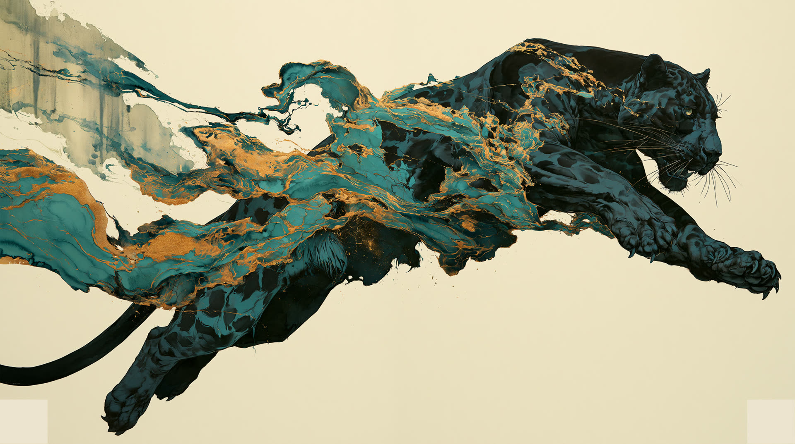
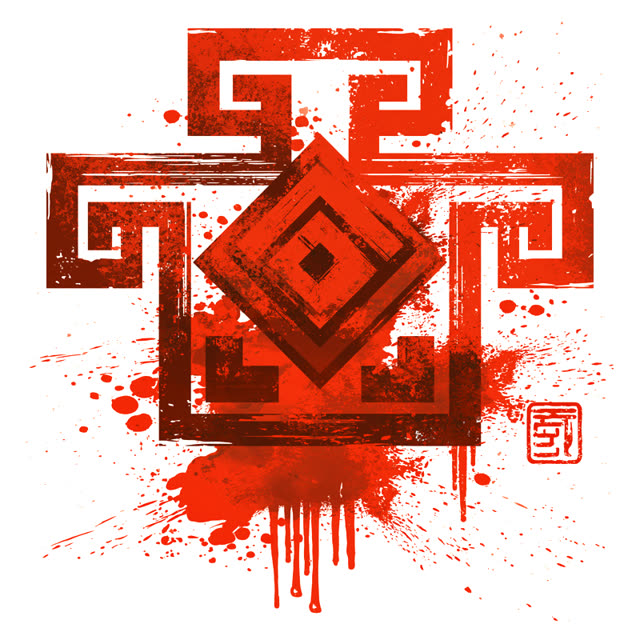
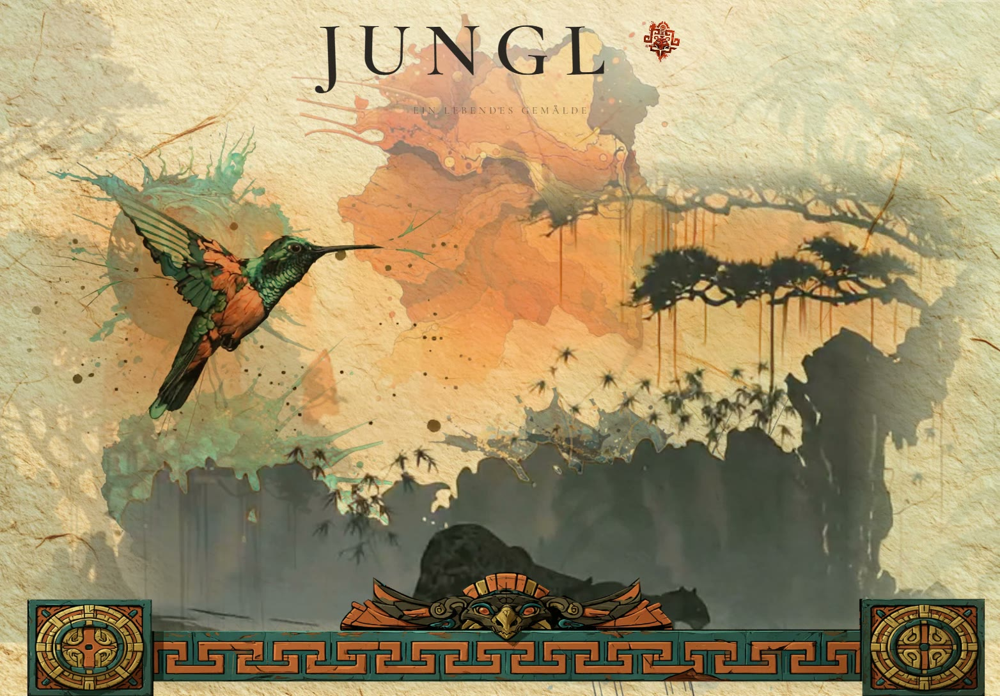
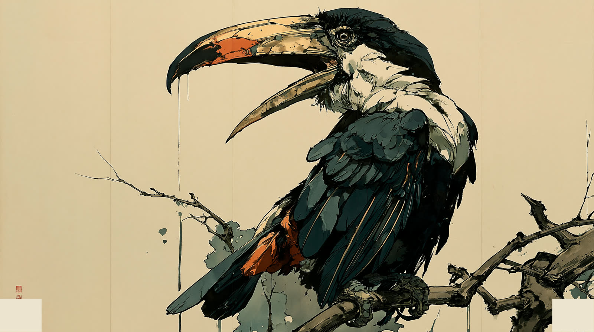
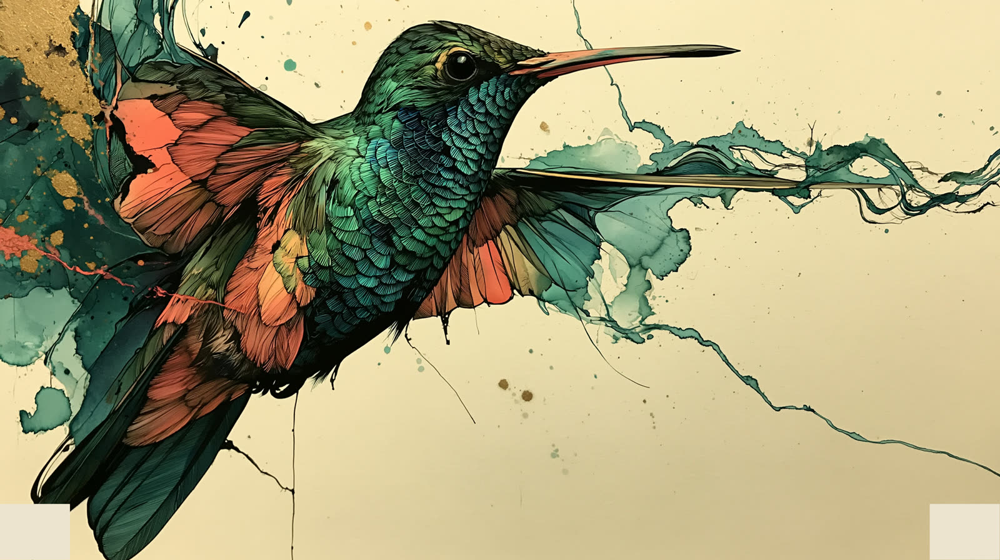

Case /06 · Web-Erlebnis · Kundendemo
Ein lebendes Gemälde. Sumi-e trifft Inka, und ein Dschungel blüht unter dem Scroll auf.
Das Gemälde live erleben →Todd McFarlane lernt Sumi-e und erzählt eine Inka-Geschichte. Als Web-Erlebnis.
Jede Station blüht als Tinte im Papier auf und stempelt ihren Buchstaben. Tukan und Schlange treten dazwischen auf. Am Ende steht der Titel, und das Gemälde ist komplett.

Eigenes Drehbuch, handgemalte Skizzen, eine Handschrift. Midjourney baut die Motive aus, Kling setzt sie in Bewegung, danach wird freigestellt, bis nur noch Tusche übrig ist.
2D-Canvas mit eigener Splash-Engine. Echte Klecks-Stempel werden zu Masken, jede Szene blüht wie Tinte im Bütten auf. Vorbild war die recherchierte Physik echter Tusche auf Papier.
Der Scroll dirigiert. Kleckse landen mit Kontakt zur Silhouette, Videos spielen genau einmal und trocknen als Bild ein. Choreografiert bis auf den einzelnen Klecks.


Am Anfang stand ein Anruf. Ein Freund und Kunde wollte ausprobieren, wie sich seine Welt im Browser anfühlen könnte, und ließ alles offen. Solche Aufträge sind selten. Also wurde aus dem Experiment eine Bühne.
Die Richtung kam aus Bildern, die bleiben: die Tuschemalerei des Sumi-e, die Wucht von Todd McFarlanes Linien, die gemalten Welten von Guild Wars 2, dazu die Ruhe des Dschungelbuchs. Handgemalte Skizzen und ein eigenes Drehbuch legten fest, wer auftritt, wo die Tinte landet und wann das Papier still bleibt.
Midjourney baute die Motive in dieser Handschrift aus, Kling setzte sie in Bewegung. Panther, Tukan, Schlange, Kolibri. Jedes Motiv wurde freigestellt, bis es auf dem Papier lebt.
Damit die Täuschung trägt, wurde recherchiert, wie sich echte Tusche verhält: wie Tinte in Bütten einsickert, wie Ränder auslaufen, wie ein Klecks trocknet. Die Splash-Engine stempelt jede Szene aus echten Klecks-Formen auf, und die Inka-Ebene erzählt leise mit. Tocapu-Siegel rahmen die Reise, und wer das Siegel im Titel anklickt, findet einen Jaguarkopf und einen Witz für alle, die bei Jungle zuerst an Drum and Bass denken.
Wohin die Demo führt, weiß noch niemand. Dass es weitergeht, steht außer Frage.
Eine Demo wie ein Kinobesuch. Markenwelten dürfen sich so anfühlen.